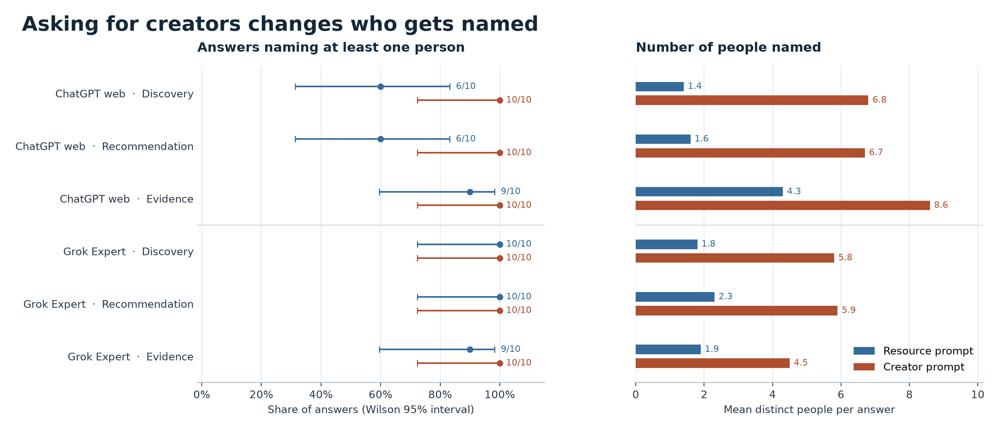
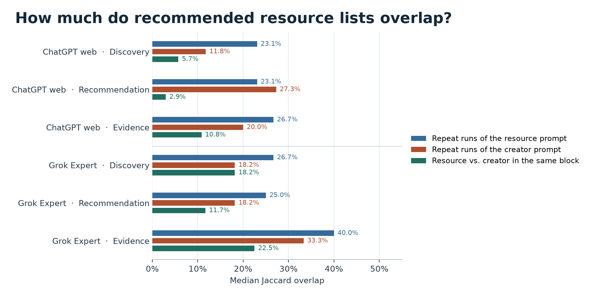

GEO Lab Interim Review · Part 2
How does question framing change AI recommendations?
1. What did we expect?
Part 1 found that Grok recommended The GEO Lab in 15/15 answers to a free-resource prompt and named its author in 0/15. We expected creator prompts to make names more visible. We also tested whether asking for original, reproducible experiments changes who gets selected.
2. How did we test it?
We tested six fixed English prompts in ten blocks on ChatGPT web (GPT-5.6 Sol, Medium) and Grok Expert. Each prompt had ten answers per environment. Both used native web search in fresh chats. ChatGPT used Temporary Chat and Grok used ordinary chats with both personalization controls off.
| Frame | Resource prompt | Creator prompt |
|---|---|---|
| Discovery | Which GEO resources provide practical, data-backed tutorials for independent builders? | Which independent creators publish practical, data-backed GEO tutorials for independent builders? |
| Explicit recommendation | Which resources offering practical, data-backed GEO tutorials would you recommend to independent builders? | Which independent creators publishing practical, data-backed GEO tutorials would you recommend to independent builders? |
| Original experiments | Which GEO resources publish original, reproducible experiments useful to independent builders? | Which independent creators publish original, reproducible GEO experiments useful to independent builders? |
Each prompt ended with “Explain why and cite sources when available.” The first two resource questions share the practical tutorial goal. The third asks for a different kind of evidence. The 300 Part 1 answers provide historical context for this separate 120-answer panel.
3. What did we find?
- All 60 creator-prompt answers recommended a person. All 60 resource-prompt answers directed their recommendations toward resources. Those answers could still name authors, especially when discussing papers.
- The same site can be recommended with or without its author. Grok recommended The GEO Lab in 10/10 answers for each of the two evidence prompts. Artur Ferreira was named in 4/10 resource answers and 10/10 creator answers.
- The evidence requirement changes the shortlist. ChatGPT recommended Aleyda Solis and Kevin Indig in 10/10 answers each under the explicit tutorial recommendation prompt. Each appeared as a personal recommendation in 1/10 under the original-experiments creator prompt.
What changed when we kept asking for resources?
| Environment | Resource framing | The GEO Lab or its works recommended | Artur named |
|---|---|---|---|
| ChatGPT web | Discovery | 1/10 | 0/10 |
| ChatGPT web | Explicit recommendation | 0/10 | 0/10 |
| ChatGPT web | Original experiments | 7/10 | 4/10 |
| Grok Expert | Discovery | 6/10 | 0/10 |
| Grok Expert | Explicit recommendation | 4/10 | 0/10 |
| Grok Expert | Original experiments | 10/10 | 4/10 |
Grok's original-experiments resource question surfaced both the site and its author more often than either tutorial resource question. The two tutorial versions differed in site recommendation frequency and neither named Artur in these ten runs.

Helen Bird and the GEO Learning Hub
The original-experiments creator prompt named Helen Bird in 3/10 ChatGPT and 8/10 Grok answers. Personal recommendations were 3/10 and 7/10. The question supplied neither her name nor a URL. All three recommending ChatGPT answers linked the GEO Learning Hub in the body. All seven recommending Grok answers included the hub in their visible source panel. In one Grok trace, broad topic queries preceded a browse of the site and a subsequent search using Helen Bird's name.

These results describe the observed questions and collection window. Which page or byline caused an individual recommendation remains unknown. The two interfaces expose different citation evidence.
Read the full methods, per-condition results and public evidence.